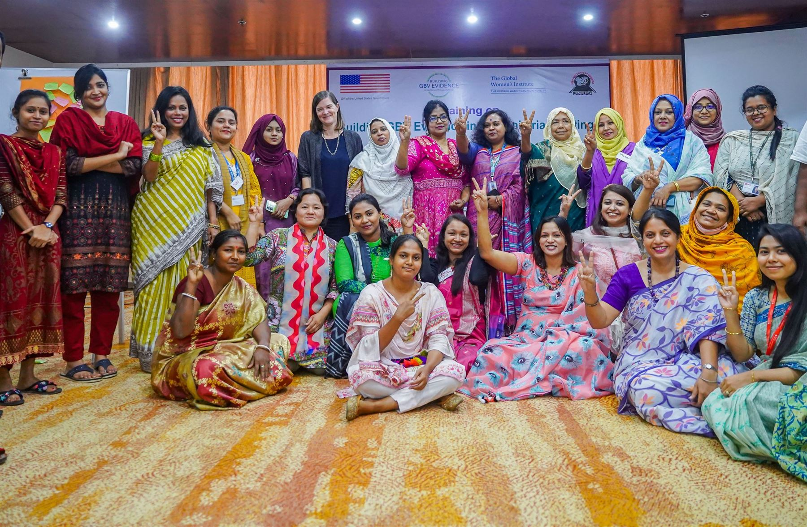
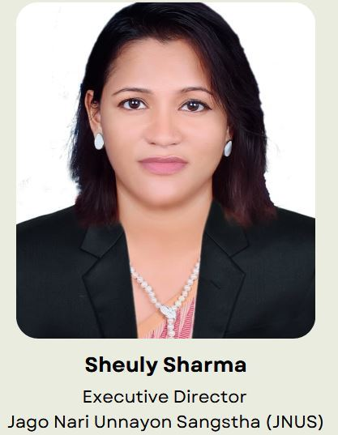

Our vision
To bring an end to all forms of violence and discrimination against women and girls, regardless of gender, race, religion and culture.

Since 2009, Jago Nari Unnayon Sangstha has grown from a small group of women in Ramu into one of Cox's Bazar's most trusted women's rights organisations — working in host communities and the Rohingya camps alike.
Our story
JNUS was founded in 2009 by local women in Ramu, Cox's Bazar, who saw how violence, poverty and exclusion held the women of their community back — and decided to do something about it.
As the humanitarian crisis grew around us, so did our work. Today we are an independent, non-profit, non-political, women-led NGO working on gender-based violence, women's leadership, livelihoods, health, gender-responsive WASH, climate justice, disaster risk reduction, peacebuilding and advocacy.
What hasn't changed is who we are: local women, trusted by our communities, accountable to the women and girls we serve.

2009
A group of local women establishes Jago Nari Unnayon Sangstha at Ramu College Gate, Cox's Bazar, to fight violence and discrimination against women and girls.
2018
With BLAST and the C&A Foundation, the SHEBA project forms 50 women's self-help groups to claim rights and access justice.
2019
Multi-sectoral support services for Rohingya women begin with Australian Aid through BRAC; our skills and livelihood training starts in Ramu, Ukhiya and Sadar.
2020
Local Women Lead for Sustainable Peace with GNWP and MAITREE with UN Women — plus a rapid COVID-19 response delivering 12,000 masks and 60 handwashing stations.
2022
JNUS carries out community data collection for the UN OCHA Inter-Agency Humanitarian Evaluation on COVID-19 across all 37 Rohingya camps, and trains 30 local organisations in Education in Emergencies.
2023
We become the focal WASH organisation for Camp 3 and lead emergency health support after the Kutupalong camp fire.
2025
Means to Lead expands into baking and beauty training; our Young Women Leaders Forum takes technology-facilitated GBV to a national dialogue in Dhaka.
2026
The FCDO-funded SHIFT project brings sustainable WASH to 43,170 people in Camp 3 — and a refreshed JNUS sets out to grow women-led change with friends around the world.
What guides us
To bring an end to all forms of violence and discrimination against women and girls, regardless of gender, race, religion and culture.
To promote a just, inclusive and democratic society where women and girls lead sustainable development.
Impartiality
Humanity
Dignity
Gender equality
Human rights
Respect for diversity

Leadership & governance
Under the leadership of Executive Director Sheuly Sharma, JNUS has built deep trust with communities, local government and international partners — and has helped bring host and Rohingya women together around shared goals for safety, dignity and opportunity.
Our work is aligned with the Sustainable Development Goals, especially gender equality (SDG 5), and guided by our Strategic Plan 2022–2026.
Executive Committee
Board oversight & strategy
Senior Management Team
Operating under a written ToR
Internal Audit Team
Independent financial checks
Accountability
Donors and partners trust JNUS because we hold ourselves to clear, written standards — from safeguarding and child protection to anti-bribery, data protection and complaints response.
Also: Strategic Plan 2022–2026 · Administrative · HR · Safety & Security · Inventory Guideline · Advocacy & Networking · ToRs for the Senior Management and Internal Audit Teams. Copies are available to partners on request.

Where we work
Partners & networks
We are proud to work with UN agencies, bilateral donors, foundations, universities and national women's rights organisations.
Newsletter
Quarterly updates on the women we work with, where your gift went, and what comes next. No spam, ever.